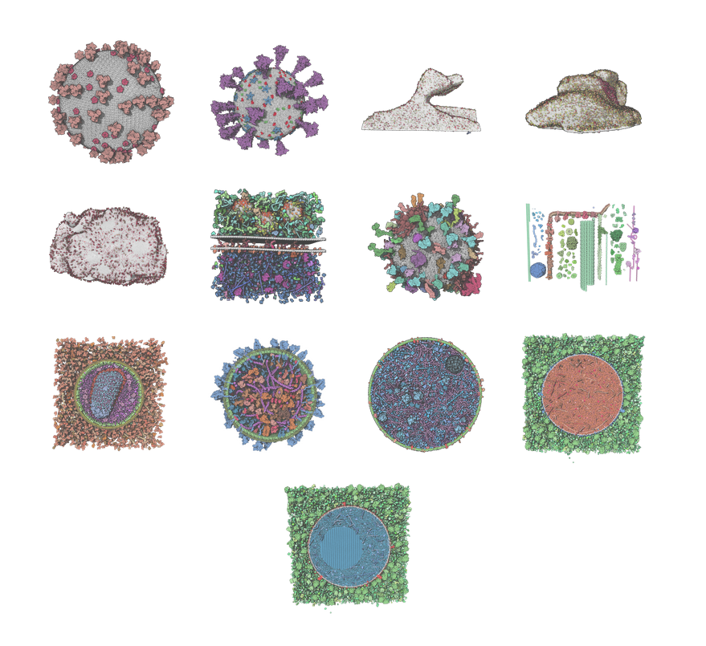

Examples
Examples of Models
We prepared several use cases that can be accessed from the Mol* Mesoscale Explorer web page (https://molstar.org/me/examples/):
 HIV SARS-CoV-2 Postsynapse Postsynapse Presynaptic Synaptic vesicle Machinery HIV Exosome Mycoplasma immature ISG mature ISG
- Petworld HIV virion model consisting of 37.7 million atoms that carries two RNA strands inside the capsid core particle. Authors: Kornel Ozvoldik, Elmar Krieger, and the CellPack team.
- Petworld model of SARS-CoV-2. 13 million atoms 976 instances. Authors: Kornel Ozvoldik and Elmar Krieger.
- Petworld model of the postsynapse made of 1.4 billion atoms and includes protein filaments, endosomes, and the mitochondrial envelope. Based on previous work by Helm et al. (doi: 10.1038/s41593-021-00874-w).
- Petworld model of the postsynapse made of 0.9 billion atoms and includes protein filaments and endosomes. Based on previous work by Helm et al. (doi: 10.1038/s41593-021-00874-w).
- Petworld model of the presynaptic bouton made of 3.07 billion atoms and includes protein filaments, endosomes, the mitochondrial envelope, and 307 glutamatergic vesicles. Based on previous work by Wilhelm et al. (doi: 10.1126/science.1252884).
- Petworld synaptic gap model consists of 98.8 million atoms, carrying 10 synaptic vesicles pre-loaded with 8000 glutamates each. Authors: Leticia Alves da Silva, Kornel Ozvoldik, and Elmar Krieger.
- Petworld synaptic vesicle model consists of 3.6 million atoms, carrying 8000 glutamates. Authors: Kornel Ozvoldik and Elmar Krieger.
- Machinery Of Life 3.8 million atoms 475 instances by David Goodsell and Ludovic Autin.
- CellPack HIV model 13.7 million atoms 15313 instances by Ludovic Autin et al.
- CellPack Exosome model of 10 million atoms 7766 instances by Julia Jimenez, and Ludovic Autin et al. (doi:10.5210/jbc.v43i2.10331).
- CellPack model of an entire Mycoplasma genitalium cell. 30 million atoms 3740 instances. Authors: Martina Maritan et al. (doi:10.1016/j.jmb.2021.167351).
- CellPack immature Insulin Secretory Granule and CellPack mature Insulin Secretory Granule. 0.9 billion atoms by Ludovic Autin et al. (doi: 10.1017/qrd.2022.10).
Examples of tours
Here are the currently available tour based on available models :